サクソフォン用リード
バンドーレン・リード
サクソフォン用リード
カットの違い
厚さの等しい箇所を線で示した、以下の図形をご覧下さい。 弓形の角度が尖っているほどリードの背と中心部が厚く、また反対に側面の斜面が薄くなります。
世界的な演奏家との協力関係とテストを通してさまざまな意見を調査した結果、バンドーレン社はリードの規格を発展させることができました。
そして、それにより今日の演奏家たちのさまざまな要求を満足させることができました。
カットには異なる7種類があり、それによってそれぞれのタイプで異なるフレキシビリティを得ることができます。
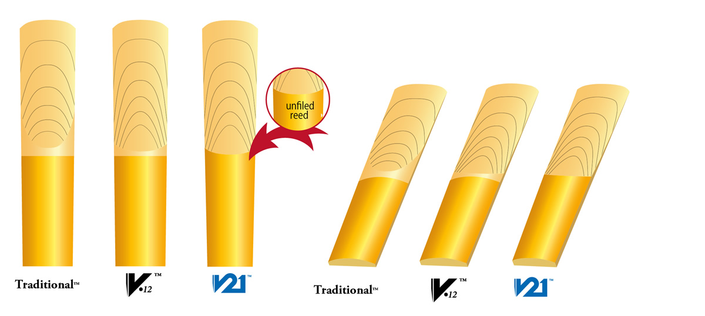
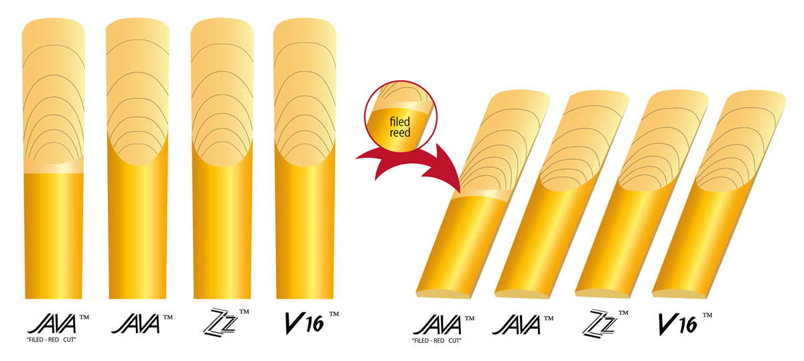
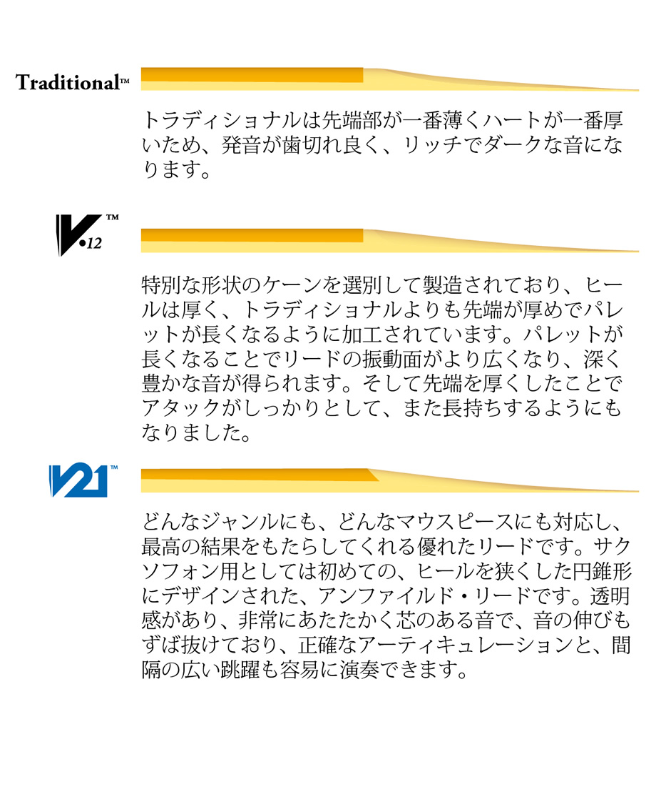
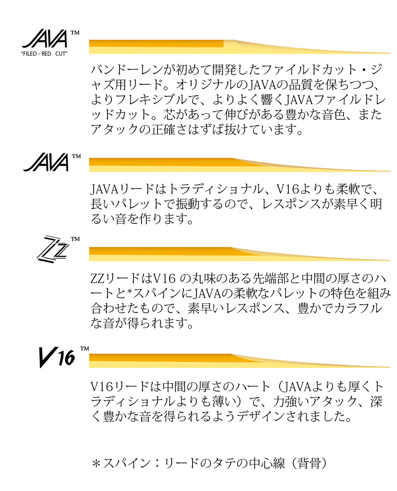
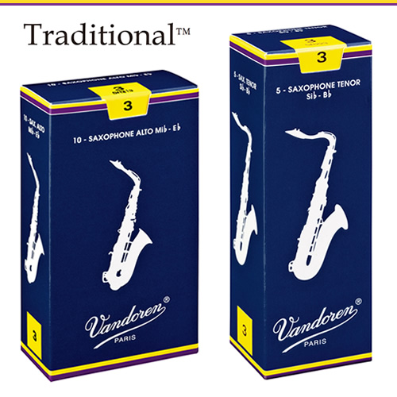
トラディショナル
このリードは、長年にわたって高い評価を得ている一番幅広く使われているリードです。非常に薄いティップからきわめてピュアな音質が生み出されるようにデザインされており、また振動する部分のコシが強くJAVAやV16よりも∗パレットが厚くなっています。∗パレット 最大限に振動する部分のこと。
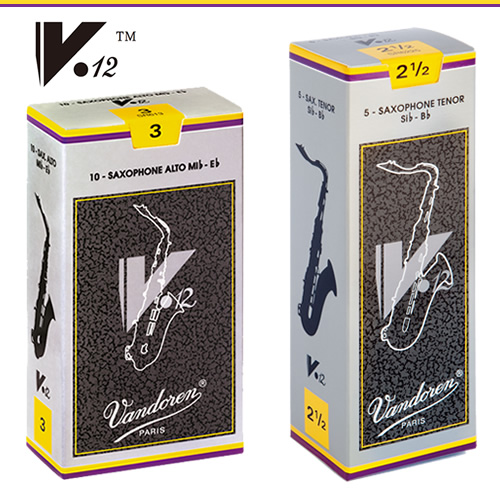
V.12
すでに25年にわたって成功を収めているクラリネット用と同様に、厚めのヒールと長めにされた∗パレットが特徴で、その結果振動部分が広くなり、より深く豊かな音が得られます。 また、正確な発音、均一な響き、よくコントロールされた高音域、あたたかくベルベットのような音など、V.12ならではの魅力がいっぱいです。∗パレット 最大限に振動する部分のこと。
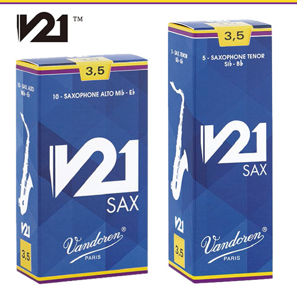
V21
どんなジャンルにも、どんなマウスピースにも対応し、最高の結果をもたらしてくれる優れたリードです。 サクソフォン用としては初めての、ヒールを狭くした円錐形にデザインされた、アンファイルド・リードです。 透明感があり、非常にあたたかく芯のある音で、音の伸びもずば抜けており、正確なアーティキュレーションと、間隔の広い跳躍も容易に演奏できます。
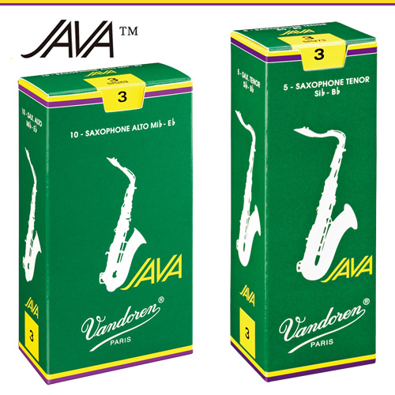
ジャバ
1983年に、バンドーレンがジャズとポピュラー音楽用に開発しました。トラディショナルより先端部が厚くパレットがより柔軟なので、広い面積部分で最大限の弾力性を持って振動させることができます。このタイプのコシの部分は結果的に弾力ゾーンが広めになるので、柔軟に演奏することができます。JAVAのJAはジャズを表わし、VAはバラエティー（娯楽音楽）、そしてもちろんバンドーレンを表わしています。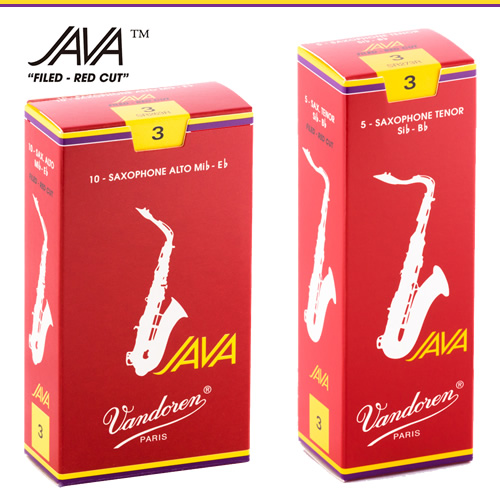
ジャバ ファイルド レッドカット
バンドーレンのジャズ用リードとしては初めてのファイルド・カットされたリードの登場です。よりフレキシブルで、正確なアタック、遠鳴りがして芯がありリッチな響きが得られ、演奏をより楽しくしてくれます。
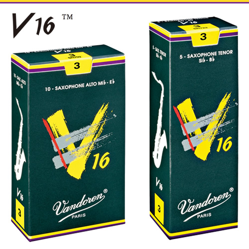
V16
アメリカ人ジャズミュージシャンの要望に応えるべく、1993年に発表されました（JAVAをもう少し厚くしたもの）。V16はトラディショナルよりも先端部が厚くパレットが長めです。サウンドはより輝きがあり、より振動するので、特にあらゆる新しいスタイルの音楽に適しています。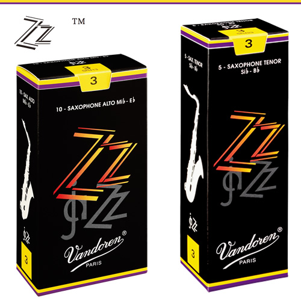
ズイーズイー（ZZ）
ジャズ・サックス奏者によるテストでは、この新製品ZZリードはジャズに要求されるスタイルである明るさや音色を犠牲にせずに、素早く反応することが分かりました。自由な吹奏感で、すぐミュージシャンたちのお気に入りになりました。対比表
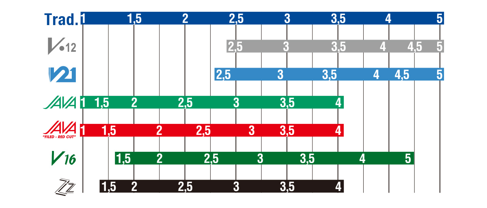